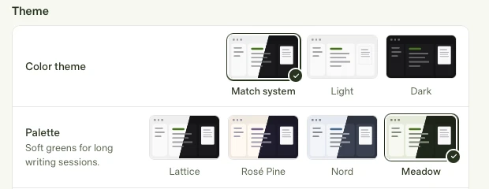

Making a theme
A theme recolors Lattice. It is data, not code: one .lattice-theme.json file that gives colors to Lattice's design roles, such as the window, the editor, text and the accent. Lattice works out every other color (hover, pressed, selection washes) from those, so a theme stays consistent in every state. A theme can't change sizes, fonts or behavior and can't run anything, so installing one asks for no permission and works on every platform.
1. Write the file
Create meadow.lattice-theme.json:
{
"$schema": "https://lattice-writer.github.io/lattice-plugins/schema/theme-1.json",
"schema": 1,
"id": "io.github.yourname.meadow",
"name": "Meadow",
"version": "1.0.0",
"author": "Your Name",
"license": "MIT",
"description": "Soft greens for long writing sessions.",
"variants": [
{
"id": "day",
"name": "Meadow Day",
"appearance": "light",
"colors": {
"window": "#eef2e6",
"chrome": "#e4eadb",
"panel": "#f6f8f1",
"editor": "#fbfcf8",
"text": "#27331f",
"text-secondary": "#56624c",
"line": "#27331f1f",
"accent": "#4f7a28"
},
"syntax": { "keyword": "#4f7a28", "comment": "#6f7a66" }
},
{
"id": "night",
"name": "Meadow Night",
"appearance": "dark",
"colors": {
"window": "#161b13",
"chrome": "#1c2318",
"panel": "#20281b",
"editor": "#1a2016",
"text": "#e3ead8",
"text-secondary": "#a9b49c",
"line": "#e3ead81f",
"accent": "#9cc56b"
}
}
]
}
The $schema line lets editors such as VS Code check the file and complete role names as you type.
idis reverse-domain, lower case and yours, like a plugin's.app.lattice.*belongs to the themes that ship with Lattice.- Variants: one to eight, each
lightordark. Lattice uses the first variant that matches the window's appearance; with only a dark variant, the light appearance stays Lattice's own. - Colors are literal
#RRGGBBor#RRGGBBAA. No names,var()or other functions. Lines are usually translucent, as above. - Every role is optional. A role you leave out keeps Lattice's color for that appearance, so a theme can be as small as two surfaces and an accent.
- An unknown role is an error. The file may be at most 256 KiB.
The roles
| Section | Roles |
|---|---|
colors, surfaces |
window, chrome, panel, raised, input, editor, pdf-ground |
colors, text |
text, text-secondary |
colors, lines |
line, line-strong |
colors, accent |
accent, focus, selection |
colors, status |
danger, success, warning, info, annotation |
syntax |
the editor's 16 token colors, such as keyword, command and comment |
terminal |
black … white and bright-black … bright-white |
Lattice keeps text readable: text, status and syntax colors that don't reach a 4.5:1 contrast on their surfaces are moved, keeping their hue, until they do, and the accent is held to 4.6:1. A theme that only reads after heavy correction will look off, so check your colors yourself. The full list of roles is in docs/themes.md and the JSON Schema.
2. Try it in Lattice
- Open Settings › Appearance. Under Theme, next to Theme files, choose Install from file… and pick
meadow.lattice-theme.json. - Lattice installs it and chooses it: Meadow appears under Palette, checked, with its description. Switch Color theme between Light and Dark to see both variants.
Lattice checks the file when you install it and says what is wrong, such as an unknown role. It keeps a copy, so after you edit the file, install it again to see the change.

3. Publish it
Themes go through the same registry as plugins, with a smaller entry. The registry's addresses are listed under Registry addresses.
Put the theme file and a licence in a public GitHub repository, here
https://github.com/yourname/lattice-theme-meadow, and tag the commit:git tag v1.0.0 git push origin v1.0.0Hash the file as committed. A theme isn't packed; the hash is the file's own:
shasum -a 256 meadow.lattice-theme.jsonIn a fork of the registry, add
themes/<id>/entry.json, herethemes/io.github.yourname.meadow/entry.json:{ "id": "io.github.yourname.meadow", "version": "1.0.0", "repository": "https://github.com/yourname/lattice-theme-meadow", "tag": "v1.0.0", "commit": "<the full 40-character sha the tag points at>", "path": "meadow.lattice-theme.json", "sha256": "<what shasum printed>" }idandversionequal the theme file's own, the folder name equalsid, andpathis the file inside the repository.Run
npm ciandnode scripts/validate.mjs --base origin/mainin the fork, as for a plugin. A new theme printsok themes/io.github.yourname.meadow/entry.jsonandnote: new theme: needs a human review (first submission).Open the pull request and fill in the theme half of its checklist.
CI fetches only your tag, requires it to point at commit, reads the file at path from that commit (a regular file of at most 256 KiB), checks its SHA-256, validates it against the schema, and checks that its id and version match the entry and its variant ids are unique.
A reviewer then asks:
- Is the id or name impersonating someone?
- Is the description accurate, the licence present, and the repository real and public? A ported palette credits its original author and keeps its licence.
- Is it readable? A theme that only works after Lattice's contrast correction is rejected.
- Does it stay data? No fonts, no images, nothing outside the schema.
Once merged, the theme is signed and published with the next index, like a plugin (see Signing), and it appears in Settings › Appearance › Browse themes…. Its tile there is painted from the index, so nothing downloads before someone chooses Install.
Updates and the kill switch
To update a theme, raise version in the file, tag the new commit, and change version, tag, commit and sha256 in your entry. Versions only go up. People who installed it from Browse themes are offered the update, which keeps their choice of theme.
The registry's kill switch covers themes too. When a version someone has chosen is blocked with "disable", Lattice draws its own colors instead, keeps the choice stored, and says ""warn" entry leaves the theme applied and shows its warning there. Themes installed from a file are never blocked.